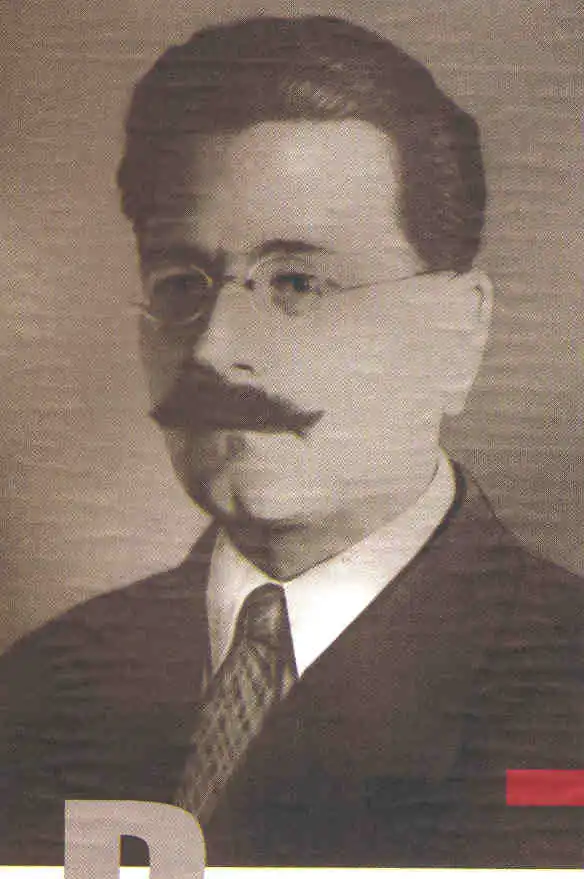

Народився 2 липня 1891 року в Києві в сім'ї народного вчителя. 1909 року закінчив Першу київську гімназію. Навчаючись, брав активну участь у гуртках Української партії соціалістів-революціонерів (УПСР), членом якої вважав себе з 1908 року.
Закінчивши гімназію, Пилипенко вступив на історичний факультет Київського університету (відділ славістики). 1912 року за революційну діяльність Сергія Пилипенка відрахували з університету та вислали з Києва без права в'їзду в університетські міста.
До Першої світової війни Пилипенко вчителював у Броварах. Улітку 1914 року Пилипенка призвали в російську армію і відправили на фронт. Там він пройшов шлях від рядового до капітана, здобув усі бойові офіцерські нагороди, був тричі поранений і двічі контужений. У військовому середовищі вів революційну пропаганду, 1917 року редагував у Ризі фронтову газету "Український голос". 1918 року, після демобілізації, Пилипенко повернувся до Києва, примкнув до місцевої групи УПСР, що гуртувалася навколо газети "Народна воля", став її редактором. Брав участь в організації повстання проти гетьмана Павла Скоропадського, за що три місяці відсидів у в'язниці. На початку 1919 року, вступивши в суперечку з лідерами есерів і есдеків щодо ставлення до Радянської влади, Пилипенко оголосив про вихід з УПСР і 13 березня вступив у Комуністичну партію більшовиків. Працював переважно як редактор партійних і радянських газет ("Більшовик", "Вісті", "Комуніст"), в редакційних відділах Всевидаву, завідував видавництвом ЦК КП(б)У "Космос". У часи військових кампаній проти Денікіна і "білополяків" командував бригадою Червоної армії. Саме його вважають прототипом редактора Карка з однойменної новели Хвильового. Після закінчення Українських визвольних змагань редагував газету "Селянська правда", обіймав керівні посади у видавництвах "Книгоспілка", ДВУ. Від 1922 року був головою створеної ним спілки селянських письменників "Плуг" і був редактором її видань, зокрема журналу "Плужанин". Був одним із основних опонентів М. Хвильового у літературній дискусії 1925—1928 рр. 1923 року виступив з ініціативою переведення української абетки на латинське письмо. У 1932—1933 рр. був директором створеного партією при Народному комісаріаті освіти Інституту Тараса Шевченка і згуртував там коло себе групу молодих дослідників літератури, здебільшого членів "Плугу", до якої входили Григорій Костюк, Юрій Савченко, Андрій Панів та розстріляні в грудні 1934 року Р. Шевченко, Кость Півненко, Гнат Проценко і Сергій Матіяш. Постановою партійної колегії ЦКК КП(б)У від 21 серпня 1933 року Пилипенка виключено з партії "як небільшовика за спотворення національної політики, ідеологічну нестійкість і примирливе ставлення до буржуазно-націоналістичних елементів". Після трусу на квартирі в будинку "Слово" 29 листопада 1933 року Пилипенка арештували. Судова "трійка" 23 лютого 1934 року порушила клопотання перед Колегією ОДПУ застосувати до Пилипенка "найвищу міру соціального захисту — розстріл". Колегія ОДПУ УРСР 3 березня 1934 року затвердила цю пропозицію. Постановою Військового трибуналу Київського військового округу від 30 квітня 1957 року вирок щодо Пилипенка скасовано і справу припинено за відсутністю складу злочину. Сергія Пилипенка реабілітовано посмертно.